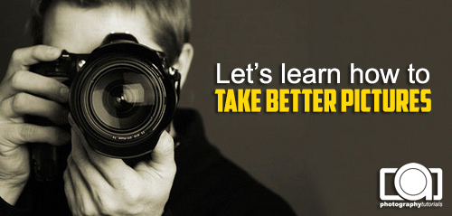

advertisement here
|
Tips Memotret Sunset Dan Sunrise
 Foto sunset dan sunrise adalah salah satu dari sekian banyak "foto wajib" yang harus dilakukan oleh seorang penggemar fotografi. Kalau anda sudah pernah mencoba memotret sunset atau sunrise tetapi kurang puas dengan hasilnya, silahkan coba tips berikut ini supaya foto sunset dan sunrise bertambah baik: 1. Lakukan Persiapan Sebaik-baiknya Sunset dan sunrise hanya berlangsung sekitar setengah jam. Untuk itu kita harus melakukan persiapan matang sebelumnya. Pastikan datang lebih awal dan pastikan anda sudah tahu dari titik sebelah mana anda akan memotret. Agar komposisi akhir foto keren, lakukan observasi tempat sebelumnya. Untuk memastikan anda tidak terlambat , usahakan anda tahu jam berapa sunset atau sunrise akan tiba (karena jam sunset / sunrise berbeda dari lokasi ke lokasi). Juga pastikan peralatan sudah siap: kamera - lensa - tripod (jika ada) serta aksesoris lainnya sudah terpasang & disetel dengan baik, sehingga saatnya tiba kita bisa sibuk memotret bukan sibuk mengeset alat. Baca lagi tips tentang komposisi. 2. Jangan Kecewa Karena Mendung Karena anda sudah bersusah - payah mendatangi lokasi yang jauh dan sulit, jangan kecewa kalau mendadak mendung tiba. Maksimalkan kreatifitas anda saat langit tertutup mendung. Langit mendung bukan halangan menghasilkan foto indah saat sunrise dan sunset. Cari tahu obyek apa saja yang menarik untuk difoto saat mendung atau hujan. 3. Jangan Terpaku Pada Wide Angle Memotret sunset dan sunrise menggunakan lensa sudut lebar (wide angle) merupakan hal yang biasa, namun jangan terpaku hanya menggunakan lensa tersebut (kalau anda memang punya pilihan lain). Manfaatkan rentang lensa yang lain, misalnya lensa tele. 4. Maksimalkan Siluet Hal yang menambah daya tarik foto sunset dan sunrise adalah siluet. Siluet memberi kesan yang kuat serta memberi cerita dalam foto anda, apalagi jika anda memotret sunset atau sunrise di lokasi yang memiliki identitas kuat. Baca juga tips memotret siluet. 5. Bawalah Tripod Jika anda ingin memanfaatkan teknik long shutter - membuat HDR atau panorama: tripod wajib dibawa. Baca Juga tips memilih tripod dan tips memilih kepala tripod. 6. Gunakan Manual Focus Karena sunset dan sunrise memiliki kualitas cahaya yang lumayan ekstrim, kadang kamera akan kesulitan menemukan fokus jika anda menggunakan mode auto focus, segera ganti ke mode manual sehingga kita tidak menyia-nyiakan waktu menunggu kamera menemukan titik fokus. 7. Gunakan Preset White Balance Cloudy Ubahlah setting white balance anda ke cloudy (biasanya dilambangkan dengan ikon mendung). Setting white balance ini akan membuat foto sunset atau sunrise lebih hangat dan warnanya lebih "menggigit", dibandingkan kalau menggunakan setting white balance auto. Atau jika anda suka bereksperimen, cobalah setting white balance lainnya. Apa itu white balance? 8. Gunakan Spot Metering (DSLR dan Prosumer) atau Sunset Scene (Untuk Kamera Saku) Untuk memperoleh eksposur yang tepat, gunakan mode metering spot jika anda memiliki kamera DSLR dan prosumer (apa itu spot metering?), atau gunakan mode scene sunset/ sunrise jika anda menggunakan kamera saku pemula. Untuk pengukuran menggunakan spot meter, arahkan titik fokus ke area sekitar matahari (jangan tepat di matahari - nya lalu lakukan metering dengan memencet separuh shutter, lalu kunci eksposur anda. Untuk kamera saku (dengan mode scene), tinggal arahkan dan jepret. Pahami mode pengoperasian kamera digital. 9. Jangan Berhenti Ketika Sunset Lewat Saat memotret sunset, jangan kemasi kamera anda hanya karena matahari sudah melewati garis horison. Bertahanlah sebentar lagi, karena cahaya sesaat setelah sunset adalah salah satu cahaya paling indah yang dikeluarkan alam. Begitu juga dengan sunrise, jangan datang terlalu mepet dengan waktu matahari terbit. Cahaya sesaat sebelum sunrise adalah salah satu yang paling indah. 10. Berdoalah Agar Alam Berpihak Pada Anda Anda sudah jauh - jauh datang ke pantai terpencil (atau gunung), menyiapkan alarm untuk bangun jam 4 pagi dan sudah menata semua peralatan agar siap memotret, namun tiba – tiba hujan tiba. Ya apadaya, memotret di alam terbuka memang membutuhkan keberuntungan dan kesabaran, kenapa kesabaran? karena anda bisa mencoba lagi esok hari :D
|

|